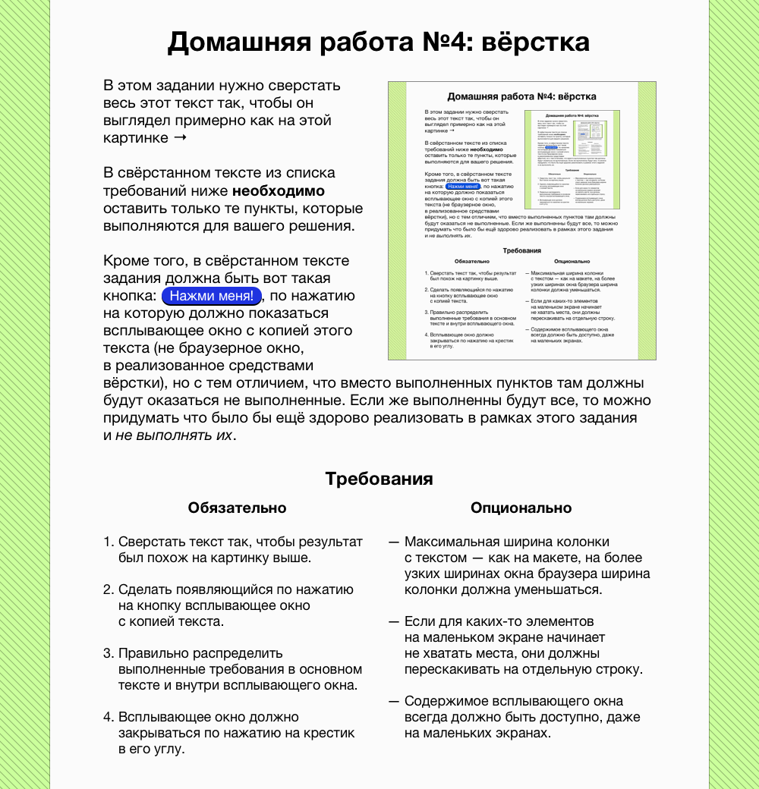

Домашняя работа №4: вёрстка
В этом задании нужно сверстать весь этот текст так, чтобы он выглядел примерно как на этой картинке→
В свёрстанном тексте из списка требований ниже необходимо оставить только те пункты, которые выполняются для вашего решения.
Кроме того, в свёрстанном тексте задания должна быть вот такая кнопка: , по нажатию на которую должно показаться всплывающее окно с копией этого текста (не браузерное окно, а реализованное средствами вёрстки), но с тем отличием, что вместо выполненных пунктов там должны будут оказаться не выполненные. Если же выполненны будут все, то можно придумать что было бы ещё здорово реализовать в рамках этого задания и не выполнять их.
Требования
Обязательно
- Сверстать текста так, чтобы результат был похож на картинку выше.
- Сделать появляющийся по нажатию на кнопку всплывающее окно с копией текста.
- Правильно распределить выполненные требования в основном тексте и внутри всплывающего окна.
- Всплывающее окно должно закрываться по нажатию на крестик в его углу.
Опционально
- Максимальная ширина колонки с текстом - как на макете, на более узких ширинах окна браузера ширина колонки должна уменьшатся.
- Если для каких-то элементов на маленьком экране начинает не хватать места они должны перескакивать на отдельную строку.
- Содержимое всплывающего кона всегда должно быть доступно, даже на маленьких экранах.